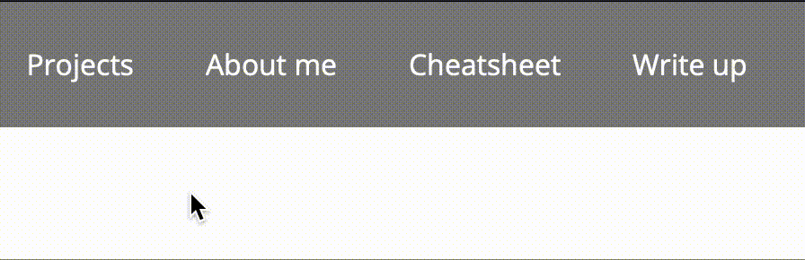
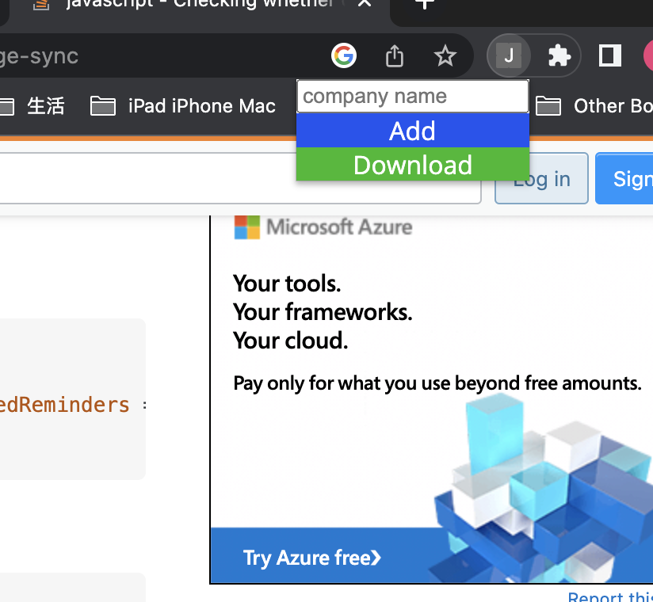

This extension helps you quickly add the job description links to your list by giving them company names. You can download the whole list as a csv as you wish. I utilize click events to perform adding links to the list and download the whole list. I also use some google APIs to help temporarily store the data list in the browser.
To use the extension, download the extension; then go to chrome://extensions, open developer mode, and load unpacked extension, which you need to select the file location of downloaded extension.
I first created a general extension file structure with the help of hello world demo code. I changed some css to make it look user-friendly. Then I started implementing the interaction part. I created the input textbox for typing company name as my primary step, followed by adding a button to add the current link to a data list. I used a google API for getting current tab's url. After that, I used another google API called chrome storage to make a local storage of a list of job urls that user adds so far. Finally, I added download button and implemented the download feature. I tested each feature individually to make sure that there is no functionality issues. Below is a screenshot of a non-appealing but functional extension (i.e. half-constructed extension).
One issue about the extension while developing is to figure out how to make file download happen. I searched online and found that I need to use a class called Blob. After reading the code via Geeksforgeeks, I made some changes of that sample code to accomodate my dictionary of job urls so that it can form the csv structure that I want. Luckily, it worked once I finished the implementation.